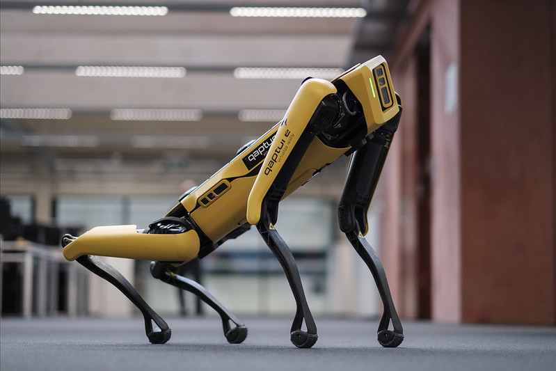

Intro
History
The Spot robot took inspiration from Cheetahs and Dogs. It was designed for military and logistics applications. Spot made its debut in 2015 as a smaller and more agile version. In 2016, Boston Dynamics released the Spot Research Edition for researchers and developers. Over the years, Spot underwent continuous improvements in mobility and autonomy. In 2020, it became commercially available, opening doors for industries like construction and oil and gas. Spot's versatility, dynamic movements, and ability to operate autonomously or under remote control have made it valuable for inspections and data collection. Boston Dynamics actively seeks user feedback to refine Spot's capabilities, ensuring its ongoing evolution and adoption in various industries.
Potenial Threat
Potential Threat The Spot robot, with its advanced mobility, autonomous capabilities, and adaptability, could potentially pose a threat if deployed for malicious purposes. As a versatile robotic platform capable of navigating diverse environments, Spot might be utilized to carry out tasks ranging from surveillance to data collection. If integrated into a networked system with the ability to communicate and coordinate, a large fleet of Spot robots could potentially be weaponized or used to compromise security. The threat would lie in the combination of Spot's physical capabilities and the potential for centralized control, allowing for coordinated actions that might challenge human safety and control. With regards to the threat it poses, we need to understand its weaknesses and hopefully disable it before it "disables" us.
The opportunity of defeating the enemy is provided by the enemy himself. - Sun Tzu.
 Creator: Christian Holzinger 2021, from FlickerLocomotion
-
Max speed
1.6 m/s
-
Max slope
±30°
-
Max step height
300 mm (11.8 in)
Important Spec
-
Operation Tempeurature
20°C to 45°C
-
Field Of View
360°
Anatomy
The robot has a well-organized design, emphasizing both durability and flexibility. Its body houses an array of arranged sensors, processors, and communication features. With various components like cameras, sensors, and movement units spread across its frame. The structure of its legs enables Spot to move across different terrains and navigate tight spaces. Spot allows for the attachment of custom tools or equipment for specific tasks, which can make it a multi-purpose machine. The combination of Spot's strong build, sensors, and flexible design makes it a versatile robotic soldier.
Dispite its versaitle design, there are several areas that we can expliot to compromise the robot.
weakness
The main camera and sensors are located convienently at the front of the robot. These area are suspectable to small arms fire. Once destroyed, their ability to see will greatly reduced.
If you are unfortunate enough to be tackled by a Spot robot, you may save your life by unlatching the battery package and remove it from the robot.